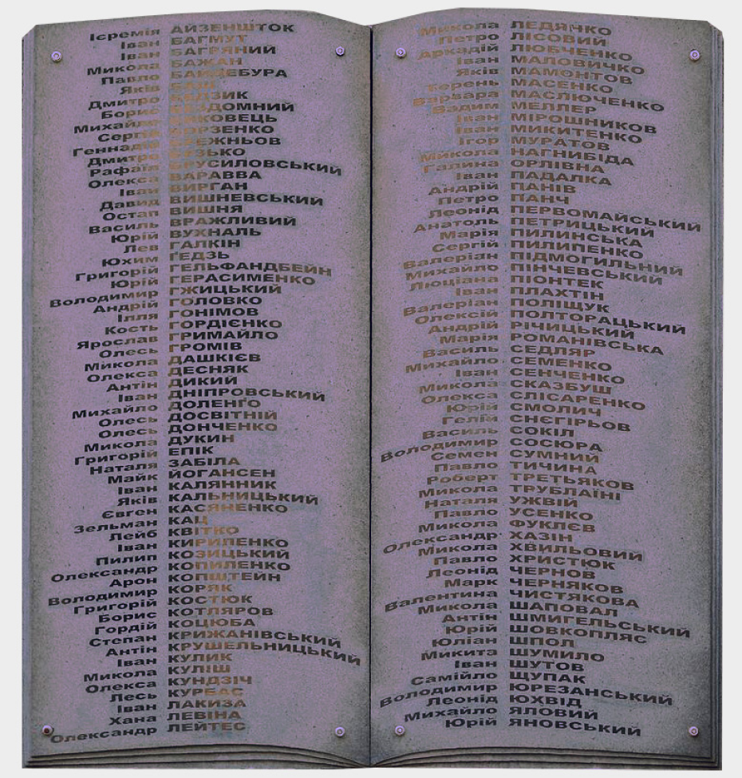

Рід діяльності
Більшість з мешканців - українські письменники, актори, журналісти, драматурги, критики. Величезна кількість української інтелегенції, яку зібрали в одному місті та час. Мешканці мали трагічний кінець своїх життів, не дивлячись на їхній вклад в українське суспільство. Чиїсь твори були викриваючими та революційними, хтось й був революціонером, бо не прогнувся під тиском та впливом радянської влади
Доля мешканців
Тих письменників, які, на погляд радянської влади, не так «реалістично» змальовували нове робітниче життя, органи НКВС з будинку вивозили назавжди. За свідченнями Івана Багряного, який частенько ходив до друзів у цей будинок з вигодами, самі мешканці назвали його «крематорієм» або ж «будинком попереднього ув’язнення».
Квартири розстріляних заселяли новими жертвами.
Отже, згідно сухої статистики у «Слові» репресували мешканців 40 квартир із 66. Розстріляли 33 особи. Ще трьох заслали на довгі роки, двоє з них там і померли. Плюс одне самогубство і одна смерть «за незрозумілих обставин». Для встановлення справжньої історії не вистачає архівів КГБ, які досі не відкриті повністю.
Історії та приклади
Остап Вишня
Губенко Павло Михайлович - найвідоміший гуморист України, другий після Т. Шевченка за обсягом тиражів. Завзятий мисливець. Голова кооперативу літераторів з Сергієм Пилипенко. Остап Вишня якимось магічним способом уникнув розстрілу у 1937 році. Ціною звільнення стали критичні твори, в яких він висміював УПА.
ЙОГАНСЕН МАЙК
Михайло Герва́сійович Йога́нсен - поет, прозаїк, перекладач, критик, лінгвіст, сценарист. Один із засновників літературного об'єднання ВАПЛІТЕ. За свідченнями багатьох сучасників "найталановитіша людина у "Слові". Найбільшого натхнення, як свідчив сам, зазнавав у сонливому й голодному стані.
ХВИЛЬОВИЙ МИКОЛА
Фітільов Микола Григорович - прозаїк, поет, публіцист, один з основоположників пореволюційної української прози. Голова літературного об'єднання " Вапліте". Вправний ковзаняр. Хвильовий вирішив не дочікуватися гостей-чекістів і закінчив усе самотужки.
БАГРЯНИЙ ІВАН
Лозов'яга Іван Павлович - український поет, прозаїк, драматург, публіцист, журналіст та політичний діяч. Голова Української національної ради. Лауреат Національної премії України імені Тараса Шевченка, номінант на Нобелівську премію з літератури. За ним вперше прийшли у 1932 році, але в 1940 всі звинувачення зняли. Це допомогло йому поїхати до Галичини й там вже займався патріотичною діяльністю у складі «Української головної визвольної ради». Після 1945 мешкав у Німеччині.Надзвичайно талановиті люди, що зробили великий вклад та надають приклад для нових поколінь. Їхні твори внесені до шкільних програм, п`єси ставляться у театрах, передрукуються та перекладаються книги.